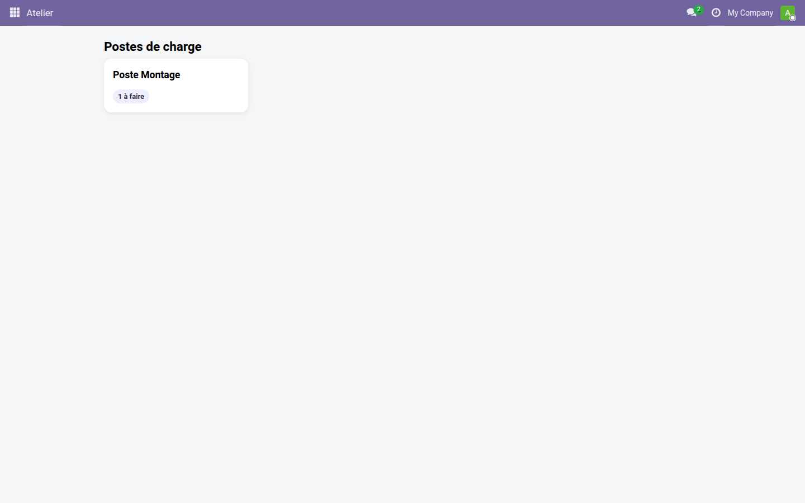
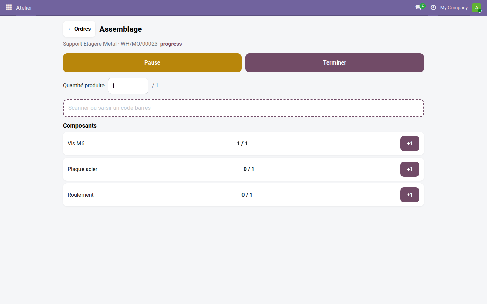

Pilotez vos ordres de travail au doigt, sur tablette ou mobile, sans jamais ouvrir une vue de bureau — l'expérience Shop Floor en Community.
Sur la ligne de production, l'opérateur n'a ni souris ni grand écran : il a une tablette posée sur le poste, parfois les mains sales ou gantées. Les vues MRP natives d'Odoo Community restent pensées pour un bureau — listes denses, boutons minuscules, aucun chrono visible. Résultat : des ordres démarrés en retard, des arrêts non tracés et des quantités saisies approximativement en fin de journée. Il manque un écran plein doigt, pensé pour être touché depuis le poste, pas depuis un fauteuil.
L'opérateur touche son poste et n'accède qu'à ses propres ordres de travail — aucune navigation dans les menus Odoo.

Chrono, quantité produite et boutons pause/fin restent affichés en grand pendant toute l'exécution de l'ordre.
Un scan retrouve le composant attendu et incrémente sa consommation, sans chercher la ligne dans la nomenclature.

Deux extensions viendront enrichir ces mêmes écrans : Atelier — Contrôle qualité ajoutera les points de contrôle qualité directement sur l'ordre en cours si le module Qualité est installé, et Atelier — Codes-barres ajoutera la saisie du lot ou du numéro de série au scan lors de la consommation des composants.
Licence LGPL-3 — compatible Odoo 19.0. Support : support@odooskills.com.